Impacto
Cultivatec llega a más de 1,500 vidas impactadas
Desde enero de 2023, más de 1,500 niñas y niños han aprendido robótica con nosotros, en decenas de escuelas e instituciones de todo México y con impacto internacional.
Leer la noticiaCultivaKits accesibles para empezar, laboratorios de robótica para tu escuela y capacitación para tus docentes. Y talleres gratuitos donde no hay presupuesto.
¿Prefieres escribirnos? ventas@cultivatec.com.mx · abraham@cultivatec.com.mx
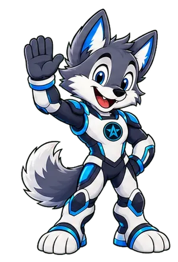
Robótica accesible para empezar en casa o en el aula, y acompañamiento para las escuelas que quieren implementarla bien.
Kits de robótica para principiantes: un proyecto claro, instrucciones sencillas y un resultado que puedes tocar.
Ver productosDiseñamos el laboratorio de robótica de tu institución, capacitamos a tus docentes e implementamos programas STEM.
Diseñemos tu laboratorioSi tu empresa quiere financiar programas de robótica para niños con menos oportunidades, conversemos.
Conocer cómo colaborarReconocimientos, alianzas, convocatorias y nuevos cursos de nuestro trabajo con escuelas y comunidades.
Desde enero de 2023, más de 1,500 niñas y niños han aprendido robótica con nosotros, en decenas de escuelas e instituciones de todo México y con impacto internacional.
Leer la noticiaUna beca equivalente a más de un millón de pesos para cursar la carrera de Mecatrónica gratis en el Tec de Monterrey.
Leer más5 sábados de 2 horas, del 19 de diciembre al 23 de enero, en Tinkercad. $1,599 MXN. Cupo limitado.
Leer másSi te apasiona la robótica y quieres impulsar la innovación, este es tu momento. Llena el formulario.
Leer másCada CultivaKit introduce una habilidad nueva sin volver complicado el montaje.
Desde el primer circuito hasta robots de competencia. Los llevamos a tu plantel y los adaptamos a la edad y al tiempo de cada grupo.
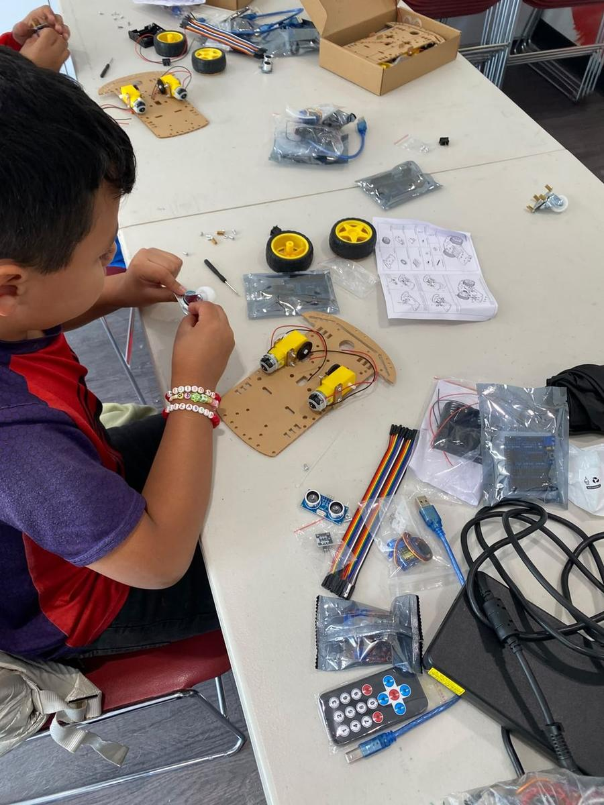
Niños y escuelasDe un circuito básico a un robot móvil que esquiva obstáculos, armado y programado por los propios alumnos.
Primaria y secundaria · 8 a 16 sesiones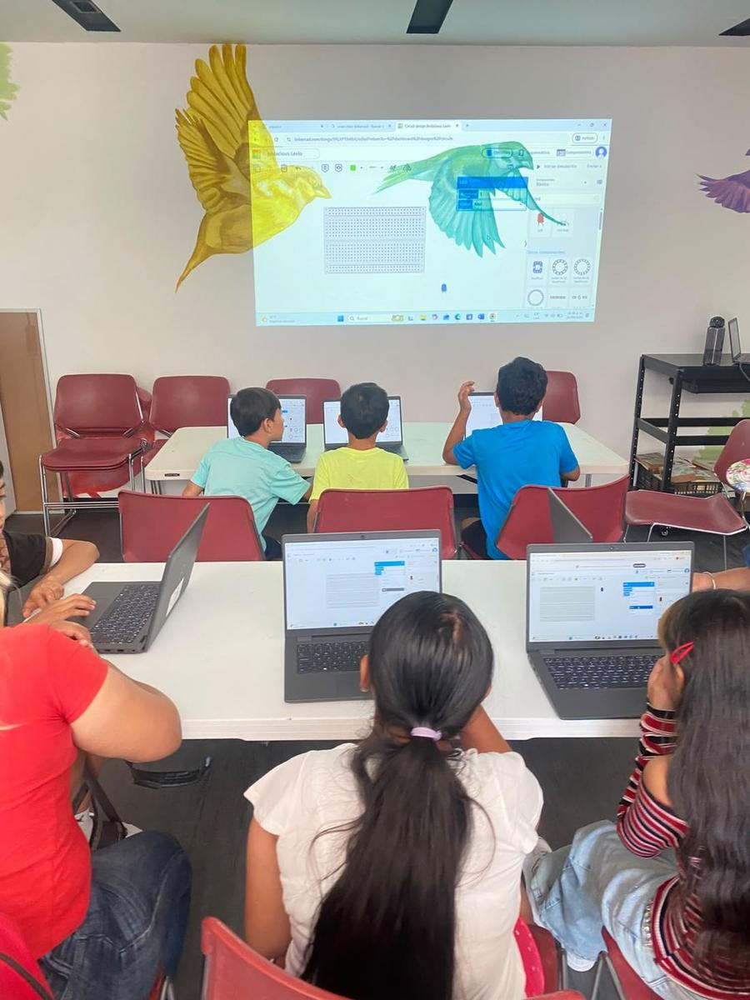
Niños y escuelasPrimer contacto con el pensamiento computacional, sin teclear una línea.
Desde 6 años · 8 sesiones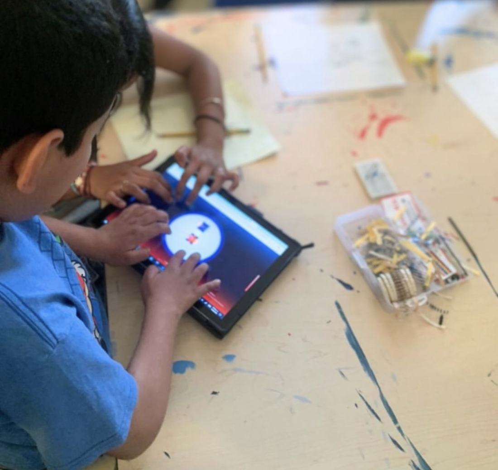
Niños y escuelasLos alumnos diseñan, programan y publican su propio videojuego.
Primaria alta y secundaria · 10 sesiones Escuelas
EscuelasMiden, calculan y comprueban en el simulador antes de tocar el material.
Secundaria y prepa · 10 sesiones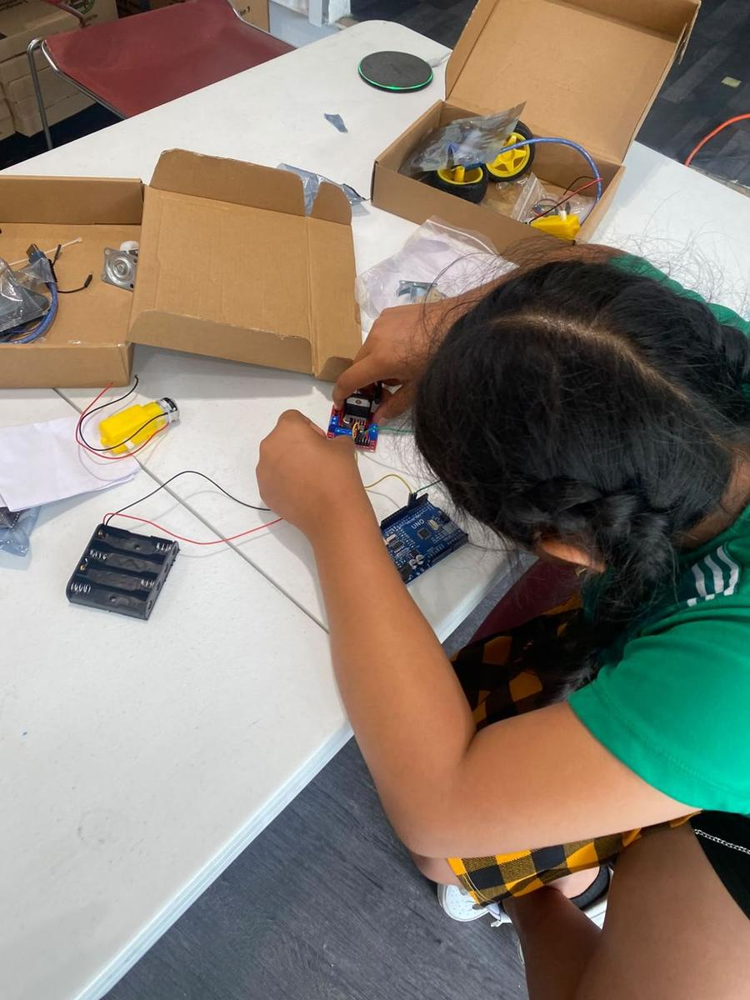
EscuelasPrograman placas Arduino para controlar luces, sensores y motores en proyectos reales.
Secundaria y prepa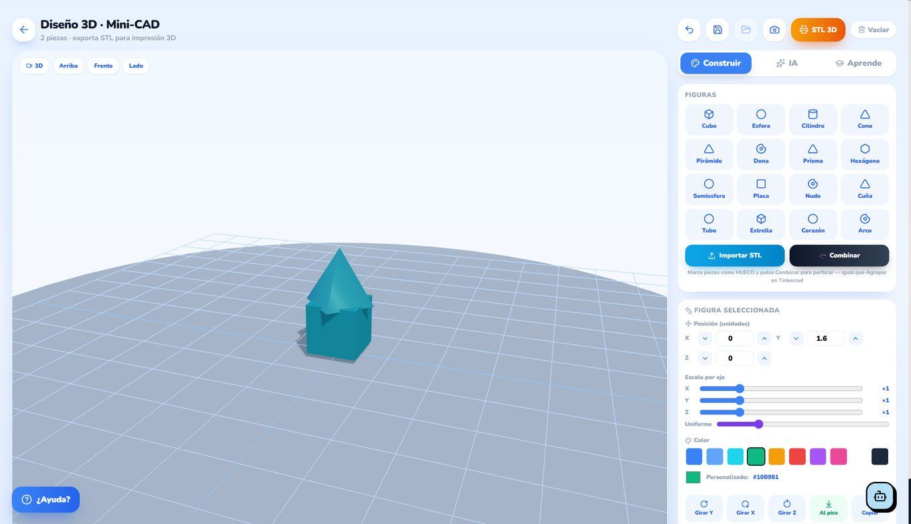
Niños y escuelasDel boceto a la pieza física: modelan, corrigen y ven su diseño salir de la impresora 3D.
Desde 10 años · 8 a 12 sesiones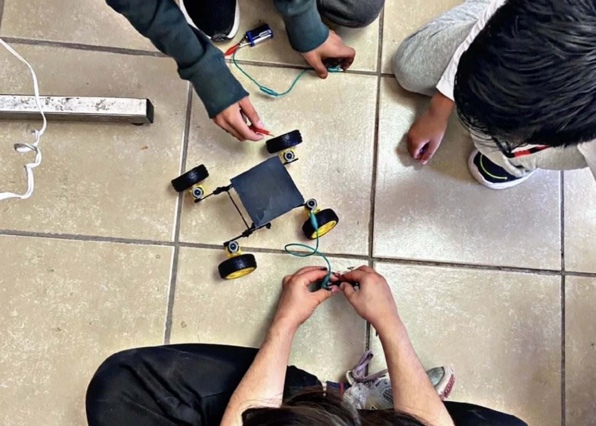
EscuelasPreparación de equipos para torneos: seguidores de línea, sumo de robots y retos de rescate.
Club escolar · Ciclo completo Docentes
DocentesFormamos a tu equipo para impartir robótica y STEM en el aula con confianza.
Para docentes y directivos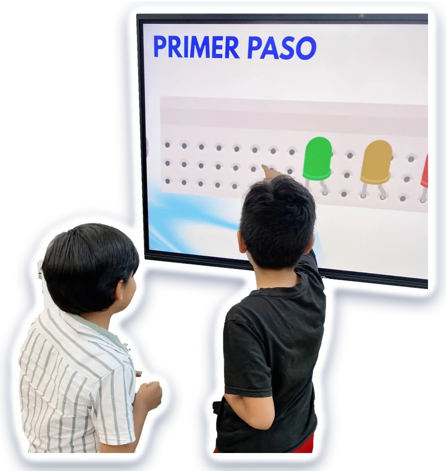
Es distinta a la tradicional: el niño aprende con proyectos y retos, avanzando paso a paso hasta obtener un resultado que puede tocar.
Entiende la idea detrás del proyecto.
Arma el circuito con sus propias manos.
Prueba, se equivoca y ajusta.
Termina con algo que funciona.
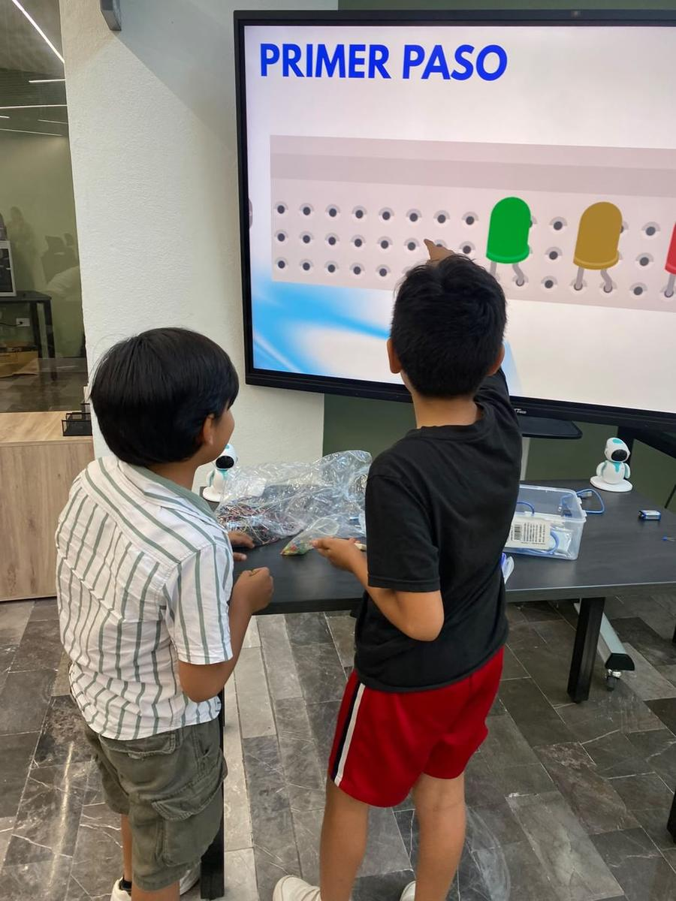


Empezamos en enero de 2023 y desde entonces más de 1,500 niñas y niños han recibido robótica con nosotros, en decenas de escuelas e instituciones de todo México. Nuestros servicios a escuelas y las alianzas con empresas ayudan a ampliar ese acceso.
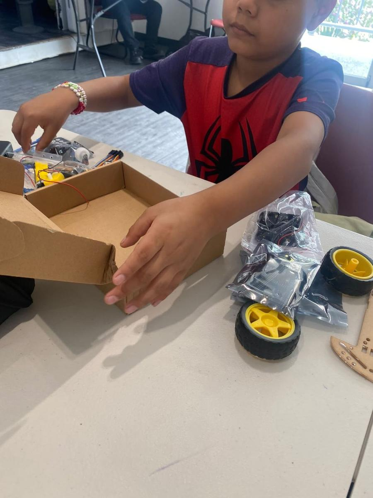

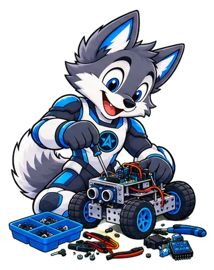
Cuéntanos qué necesitas. Si todavía no lo tienes claro, también te orientamos.